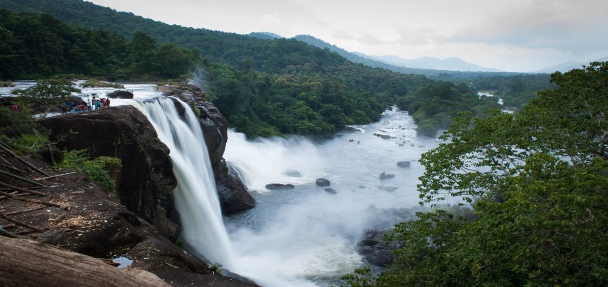
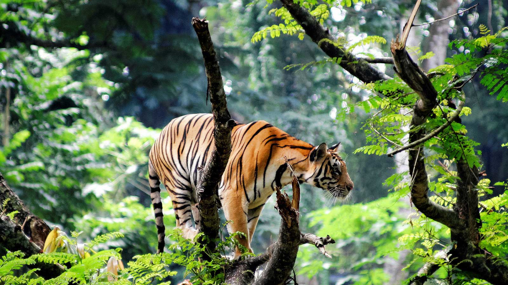
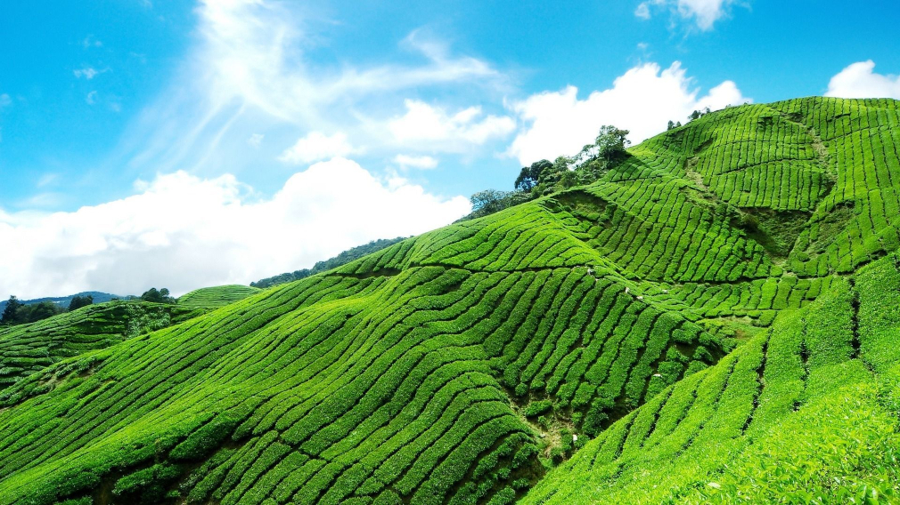
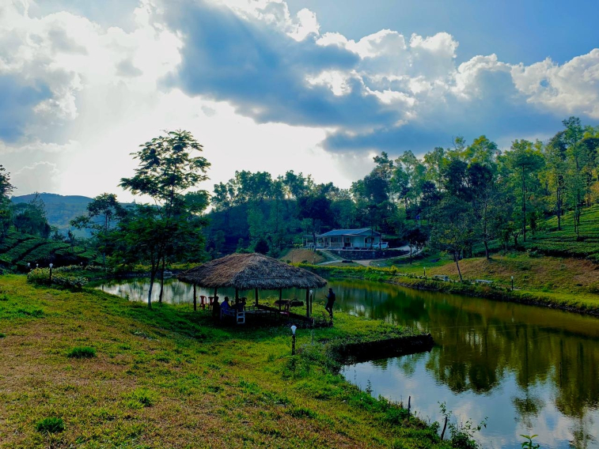

Athirapally
As you walk down the stone slabs that lead to the base of the Athirappilly waterfalls, a mysterious serenity overcomes you. It is Kerala's most famous and largest waterfall at over 80 ft high. The sight of the water crashing onto the ground leaves you with a sense of wonder at the sheer power and magnificence of nature. Located around 63 km from Thrissur district, it is a perennial picnic spot for people in the area and beyond. Its surrounding greenery is perfect for walks and picnics with loved ones. Lying at the entrance to the Sholayar forest ranges, it is a part of the Chalakudy River which calls the Western Ghats its home. Barely 5 km away is another family favourite, Vazhachal Waterfalls. These waterfalls became famous for not just their view but the endemic species found in the surrounding dense forests. Researchers have found four endangered species of the Hornbill here, the only place they thrive in the entire Western Ghats. Ornithologists attach great significance to this location and bird watchers can come across many rare and vibrant species in these parts.

Thekkady
The very sound of the word Thekkady conjures up images of elephants, unending chains of hills and spice scented plantations. The Periyar forests of Thekkady is one of the finest wildlife reserves in India. Spreads across the entire district are the picturesque plantations and hill towns that nestle beautiful trails for treks and mountain walks.It is one of the oldest tiger reserves in the country and the forests of Periyar is embellished by the presence of endangered species including White Tigers. To explore the wilderness of Periyar Tiger Reserve tourists has many options like from boating to trekking. The named Thekkady is derived from the word "thekku" which means teak. This place experiences a pleasant climate all over the year. It drops to its lowest in the month of December-January and highest in the month of April-May. The 120 years old 'Surki' dam built across Peryiar, Poorna in Vedic parlance, is a major tourist attraction. Thekkady, with its bountiful treasures of tropical flora and fauna is the ultimate reservoir of many an endangered species and a rich tribal culture. Thekkady is a pleasant heaven on earth for those who love nature in its wild manifestations.

Munnar
Munnar is a town in the Western Ghats mountain range in India’s Kerala state. A hill station and former resort for the British Raj elite, it's surrounded by rolling hills dotted with tea plantations established in the late 19th century. Eravikulam National Park, a habitat for the endangered mountain goat Nilgiri tahr, is home to the Lakkam Waterfalls, hiking trails and 2,695m-tall Anamudi Peak. Munnar - breathtakingly beautiful - a haven of peace and tranquility - the idyllic tourist destination in God's own country. Set at an altitude of 6000 ft in Idukki district, Munnar was the favored summer resort of the erstwhile British rulers in the colonial days. Unending expanse of tea plantations - pristine valleys and mountains- exotic species of flora and fauna in its wild sanctuaries and forests - aroma of spice scented cool air - yes! Munnar has all these and more. It's the place you would love to visit - it's the place you would wish never to leave.

Vagamon
Vagamon is a hill station located in Kottayam- Idukki border of Kerala. It has a cool climate with the temperature between 10-23°C during a summer midday. It is situated 1,100 metres above sea level. Vagamon is a tiny plantation township in Central Travancore, Vagamon has an overtone of green. With a never-ending line of lush green hills, breathtaking ravines and meandering rivulets. A perfect tourist place situated 1200 meters above the sea level spot surrounded by the greenery of tea gardens , Fresh cool air, murmuring Pine forest ,small waterfalls , attractive meadows inviting you to vagamon.Reaching Vagamon itself is an extraordinary experience. The meandering road to Vagamon is cut in solid rock lined with pine forests. And as you wind your way through green capped hills, the rolling plains come into view thousands of feet below you. This tourist place also has to offer Thangal Para, the Indo-Swiss Project and Kurisumala Ashram. Welcome to a land which would make you come back again and again. So that you could rejuvenate yourself and cherish memories of this enchantingly beautiful land.Vagamon hill station is comprised of a beautiful series of hillocks, valleys and cascading waterfalls that make it the ideal getaway for tourists. Take a walk along the narrow, mist covered zigzag roads that wind up the hills and experience true bliss. For adventure seekers, there is an option of trekking, para gliding or rock climbing.

Gavi
Gavi is a village in Pathanamthitta district , Kerala, India. It is located 28 km southwest of Vandiperiyar, a town in Idukki on N.H 220, the highway connecting Kollam and Madurai. Spread across the beauty of Periyar Tiger Reserve, Gavi is a quiet, beautiful and pristine forest haven. It is at the eastern extreme of the Pathanamthitta District at 3400 ft above MSL. These evergreen forests are abundant with magnificent Wildlife including the tiger, elephants, leopards, bears, Indian gaur, sambar, barking & Mouse deers, lion tailed macaque, other varieties of Kumarakom-bird Sanctuarymonkeys, Nilgiri Marten and a lot more.